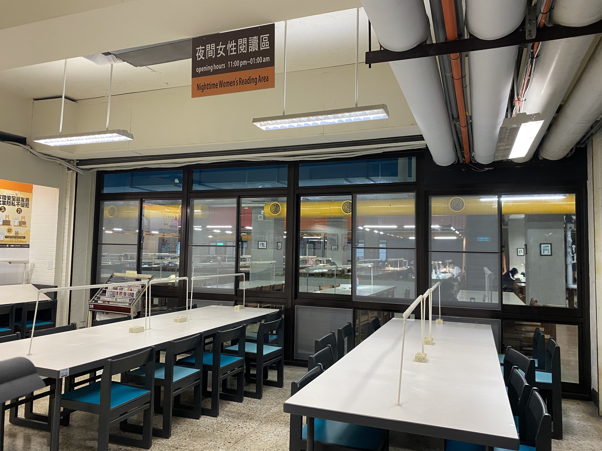
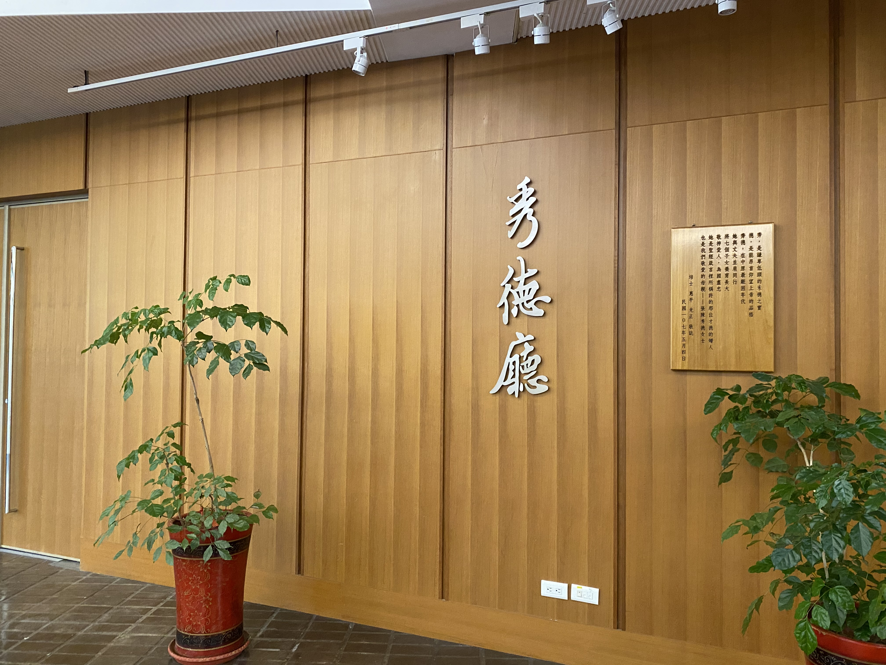
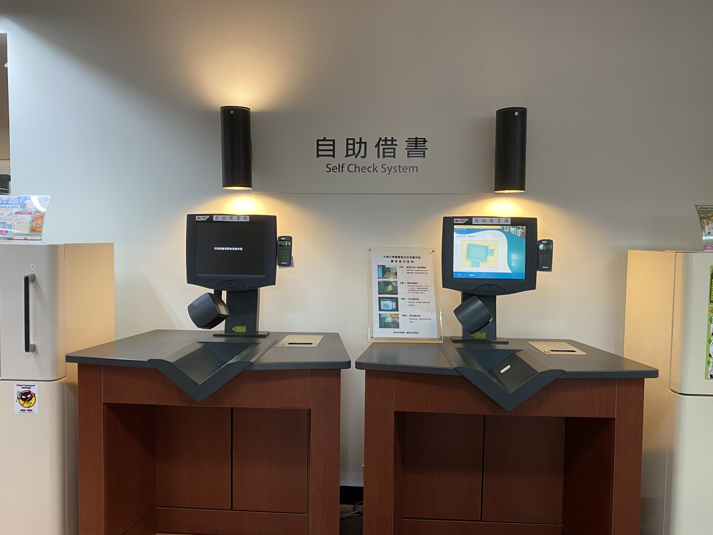
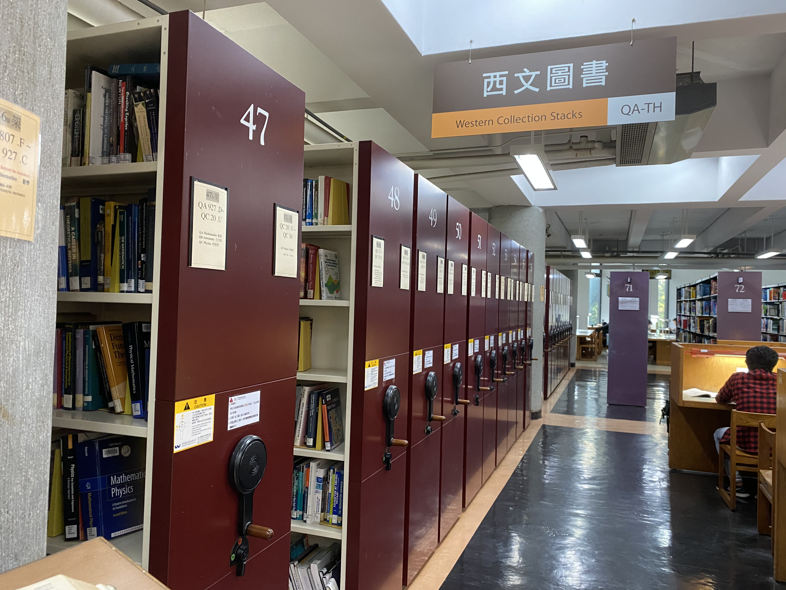
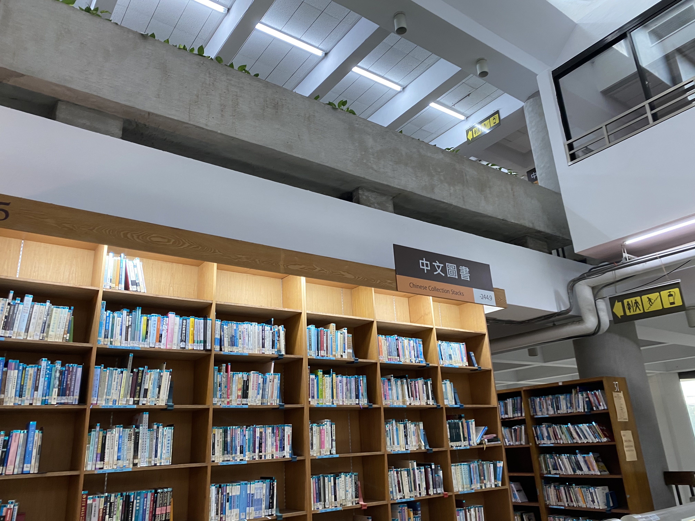
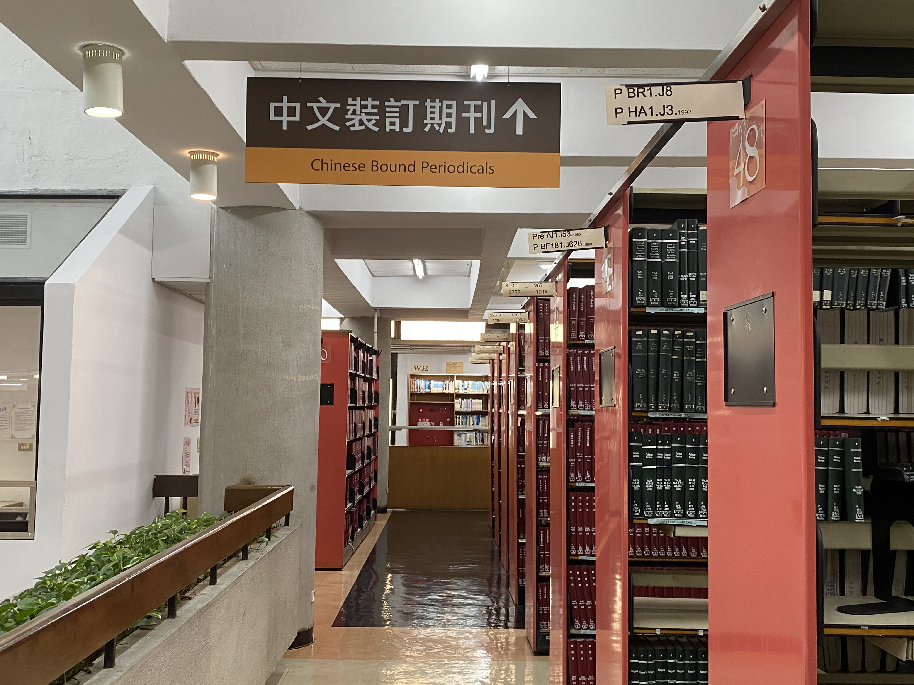

悅讀室、機械儲存室、一般閱覽室、典藏書區。
B1 典藏書區、閱覽室
悅讀室、機械儲存室、一般閱覽室、典藏書區。

圖書館的秀德廳、秘書室、館長室、書香雅集、採編組、主機房、系統組，及教務處的教師教學發展中心、
普仁小集、教學專業攝影棚、SNG視訊教室、數位教材後製室、專業倫理教學發展中心、數位錄音室。
1F 圖書館、教務處、秀德廳
圖書館的秀德廳、秘書室、館長室、書香雅集、採編組、主機房、系統組，及教務處的教師教學發展中心、
普仁小集、教學專業攝影棚、SNG視訊教室、數位教材後製室、專業倫理教學發展中心、數位錄音室。

張靜愚先生紀念室、圖書館大廳(含借還書及諮詢服務台、自助借書)、資訊共享區(含教科書/指定參考書、
地圖區、討論室、資源指導室)、讀者服務組辦公室、期刊工作室、期刊區(含閱報區、休閒讀物區、中原大
學畢業年鑑、本校教師著作)。
2F 參考、檢索、現期期刊
張靜愚先生紀念室、圖書館大廳(含借還書及諮詢服務台、自助借書)、資訊共享區(含教科書/指定參考書、
地圖區、討論室、資源指導室)、讀者服務組辦公室、期刊工作室、期刊區(含閱報區、休閒讀物區、中原大
學畢業年鑑、本校教師著作)。

西文書庫、全人閱讀區、主題書展區、西文新書展示區、創意學習室、書刊整理室
3F 西文圖書
西文書庫、全人閱讀區、主題書展區、西文新書展示區、創意學習室、書刊整理室

中文書庫000-499、基督教史料室、明月前身圖書室、中文新書展示區
4F 中文圖書
中文書庫000-499、基督教史料室、明月前身圖書室、中文新書展示區

中文書庫500-999、中西文裝訂期刊、本校博碩士論文、501-512研讀室
5F 中文圖書、裝訂期刊
中文書庫500-999、中西文裝訂期刊、本校博碩士論文、501-512研讀室